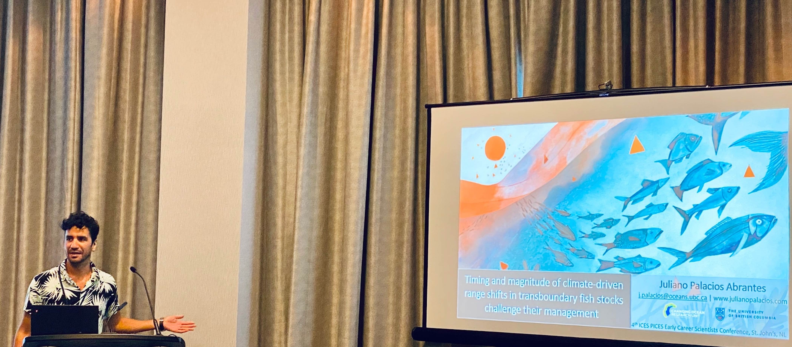

Here is a list of news articles and blogs featuring my work or where I have been quoted:
Here is a list of radio interviews I have been invited to:
Quirks and Quarks with Bob McDonald (CBC) - Climate change could spark fish wars around the globe
The Mike Smith Show - Are fish on the move due to climate change?
Here is a list of public talks, seminars and webinars I have been invited to:
Workshop 4 of the Effects of Climate Change on the World’s Oceans (ECCWO) conference, Norway. Using modelling to inform transboundary fisheries management under climate change.
NWFSC Monster Seminar Jam (webinar) - Marine fishes do not need visas: managing shared fish stocks in a changing world.
Workshop organized by the Marine Stewardship Council (MSC) and the United Nations Food and Agricultural organization (FAO), Italy - Timing and magnitude of climate-driven range shifts in transboundary fish stocks challenge their management
Seminar Series, Center for Limnology, University of Wisconsin-Madison, United States - Challenges of managing transboundary stocks on the move
Lenfest Ocean Program - New Research to Adaptive Allocation for Transboundary Fish Stocks
Skype a scientist, Canada - The marine pathway of a Latin American student
Seminar Series, Marine Institute, School of Fisheries, Memorial University, Canada - Marine fish do not need visas: Transboundary fisheries management under climate change
Center for Complex Systems Transition, Stellenbosch Institute for Advanced Study, South Africa - Marine governance in the anthropocene: Lessons from South Africa and Latin America
State of the Gulf of Mexico Conference, Texas - Towards the creation of a metadata of marine research in Mexico: a case study of the Gulf of Mexico
Weekly seminars. The United Nations Environment World Conservation Monitoring Center (UN-WCMC), UK - Building capacity for fisheries management under climate change in Latin America
Centro Austral de Investigaciones Científicas (CADIC-CONICET), Argentina. - Efectos del cambio climático en el manejo de especies transfronterisas
Webinarios del Laboratorio Nacional de Resiliencia Costera, México. - Límites dinámicos como herramientas para la protección marina en océanos cambiantes
Consejo nacional para la Biodiversidad (CONABIO), México - Hacia la creación de una base de metadatos de investigación marina en México.
Hacia la creación de una base de metadatos de investigación marina en México. Serie de charlas en diversas institutiones mexicanas incluyendo: Unidad Académica Sisal del Instituto de Ciencias del mar y Limnología de la Universidad Nacional Autónoma de México, Sisal, Yucatán; El Centro de Investigación y de Estudios Avanzados del Instituto Politécnico Nacional, Mérida, Yucatán; Centro Interdisciplinario de Ciencias Marinas del Instituto Politécnico Nacional, La Paz, BCS, y Centro de Investigación Científica y de Educación Superior de Ensenada, Baja California Norte, México
Here is a list of illustrations featuring my work, note that not all of them were created by me:
Contact
j.palacios [at] oceans.ubc.ca | Google Scholar | Twitter